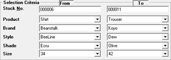
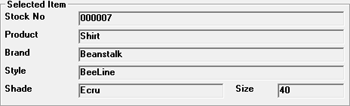
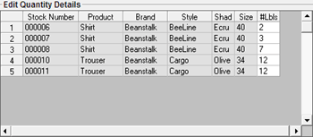

To select the items, for which the labels are to be printed, manually.

Selection Criteria: Specify the filter criteria for item selection based on Stock No., Product, Brand, Style, Shade or Size. Any combination of these can be used to refine the selection. To select stock numbers, enter the values or press F2 to open the browse window and select the required values. Other parameters can be selected from the list.
Selected Item:
Displays the stock number and attributes of the first item that satisfy
the selection criteria. Use  to view the first, previous, next or the last item
in the selected list.
to view the first, previous, next or the last item
in the selected list.

Labels to Print:
Specified Quantity: Is selected by default.
Present Stock: This option is not available in HO.
Total Records: The total number of items selected as per specified criteria is displayed.
Current Stock: This option is not available in HO as present stock cannot be chosen.
Labels to Print: Enter the number of labels to be printed, if the same number of labels are to be printed for all items. Otherwise, select F2 to specify different quantity of labels for different stock numbers. System populates Edit Quantity Details grid with all the selected stock details and you can enter the required number of labels in the column #Lbls against each item as shown.

Note: On clicking OK, you will get the provision to select the printer on which the labels need to be printed, if you are using the new script file (.blf).